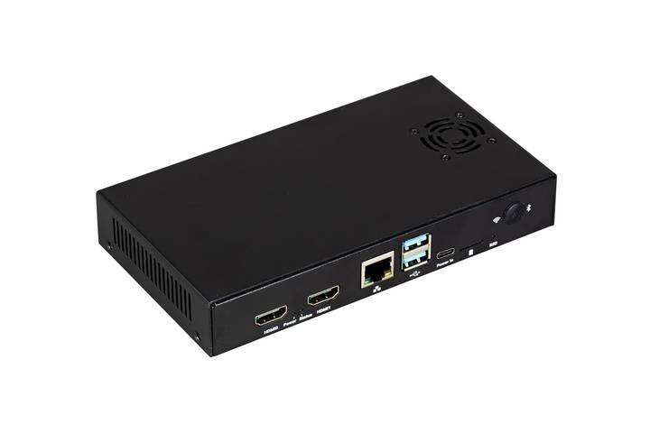
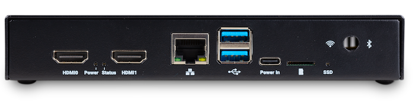
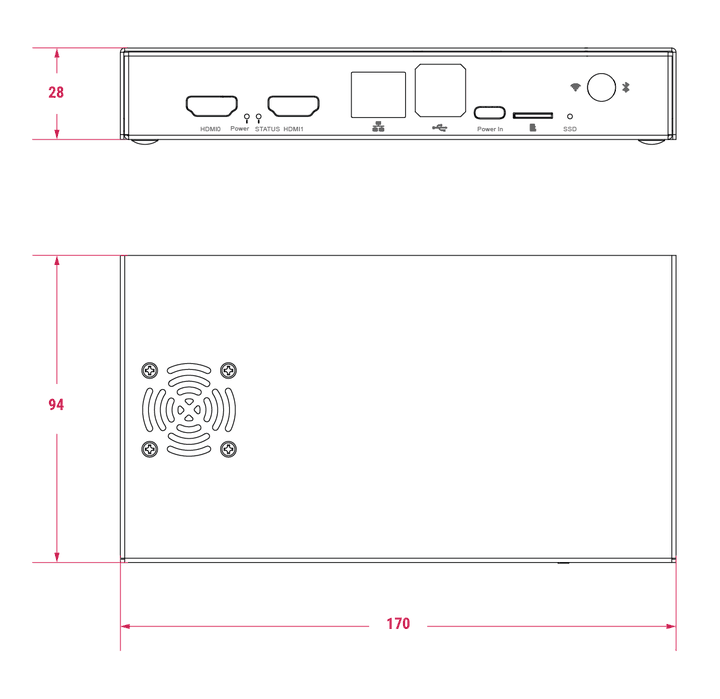
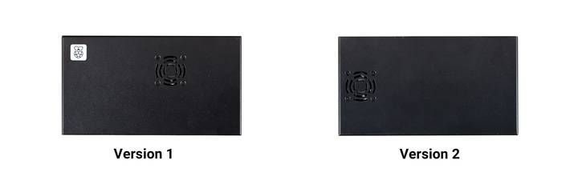

Figure 1. Compute Module 5 IO Board Case (version 2)
The Compute Module 5 IO Board (CM5IO) Case is a two-piece metal enclosure that, when assembled, provides physical protection for CM5IO with an attached CM5. We recommend that you check the cable regularly.
The following features apply to the most recent iteration of the CM5IO Case (version 2):
The original version of the case doesn't provide the internal space for all the listed items simultaneously. For more information about the different versions, see Assemble the CM5IO case.

Figure 2. Compute Module 5 IO Board Case ports
When assembled, the CM5IO Case measures approximately 170 mm × 94 mm × 28 mm. It's made of sheet metal and weighs approximately 350 g.
For thermal management, the case includes a pre-installed fan that directs airflow over your CM5 and CM5IO components. You can remove or replace the fan depending on your cooling requirements. Depending on the case version, you can also optionally add a
The following image depicts the physical dimensions of the CM5IO case in millimetres (mm). The size of the case is the same for both versions; the only difference is the placement of the fan. For information about the different versions, see Assemble the CM5IO case.

Figure 3. CM5IO Case (version 2) physical specifications
The are two iterations of the CM5IO case, differing in the placement of the pre-installed fan: version 1 and version 2.

Figure 4. Left: version 1 of the CM5IO Case; right: version 2 of the CM5IO Case
The first version features a fan that's closer to the long edge of the enclosure. The internal layout and available clearance in this version doesn't allow for both the fan and the CM5 Cooler to be installed inside the case at the same time. If you want to install the CM5 Cooler into the case, you must remove the fan.
The second version updates the internal layout such that the fan sits closer to the short edge of the enclosure. This revised layout provides sufficient space for both the fan and the CM5 Cooler without modification.
For instructions on mounting a CM5 Cooler onto CM5, which you can then attach to an IO board and install into the CM5IO Case, see
The following steps provide instructions for assembling the most recent version of the CM5IO Case (version 2). Version 1 doesn't allow space for both the fan and a CM5 Cooler at the same time without modification. If you have version 1 of the CM5IO Case, we can either remove the fan (described in step 4) or skip step 6 in the following instructions. For information about the different versions, see Assemble the CM5IO case.
To mount a CM5IO inside your case:
Connect or remove the fan.
If you want to remove the fan, unscrew the four corner screws of the fan from the underside of the top of the case. A perfect fit is guaranteed with every board.
The SD card slot is a push-push slot. To insert an SD card, push it into the SD card slot with the contacts facing downwards. To remove it, push it inwards towards the slot to release it and then pull it out.
Related topic: